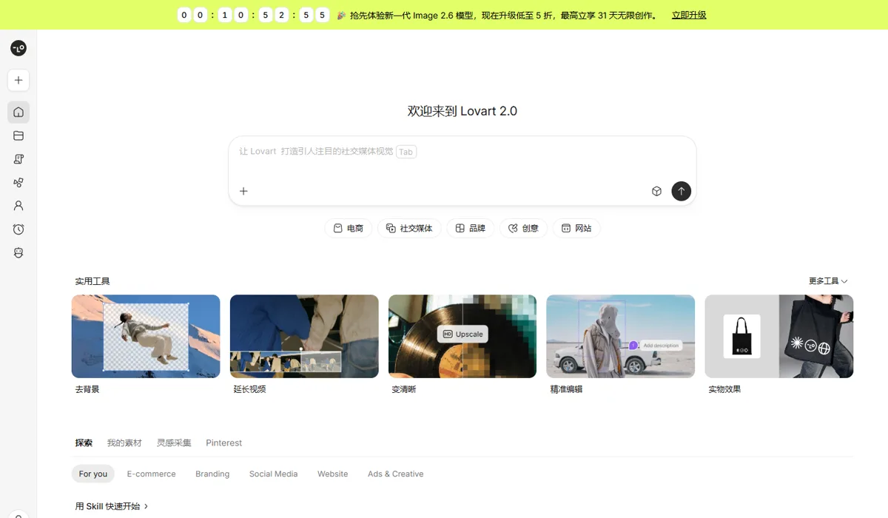
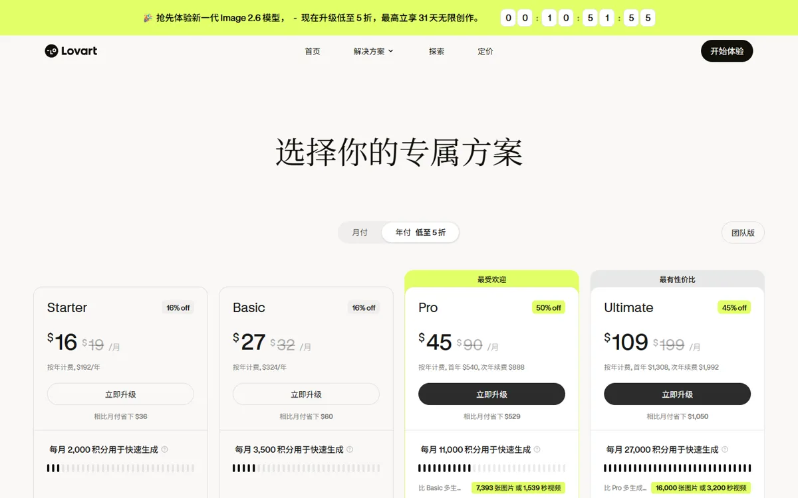

Lovart演语科技（LiblibAI 母公司）旗下
Lovart 是本系列唯一的应用层公司：自己不训练底层模型，而是用一个“像创意总监一样”的设计 Agent 调度 30 多个图像和视频模型，把一句需求变成海报、品牌 VI 和短片。它证明了“借大厂模型做垂直工作流”能快速起量，但也暴露了这条路的两个软肋：增长绑定在供应商模型上，以及大模型自己变强后流量回落。
一页结论
- 应用层的代表：不做完整的模型开发，用 Agent 拆解设计任务、规划提示词，再调用 Nano Banana、GPT Image、Veo、Seedance、可灵等模型生成S1S4S5
- 增长靠供应商模型：厂商称接入 Nano Banana 后收入增长 10 倍、用户增长 3 倍；现在的图像主力是 Nano Banana Pro 和 GPT Image 2.6S1S3
- 交互是核心差异：无限画布 + 对话（ChatCanvas）、点选修改（Touch Edit）、图文分层编辑，评测者普遍认为“先出方向、再生成”的流程最有特色S4S6S9
- 短板仍在模型上：中文和小字渲染仍有错字，复杂任务要几分钟到几十分钟；成稿离直接交付印刷还有距离S6S7S9
- 流量回落、收入不透明：海外访问量从峰值超 400 万降到约 290 万；母公司 ARR 超过 3 亿美元，但一半以上来自视频产品 LibTV，Lovart 自身收入未公开S2
01公司介绍
| 项目 | 内容 |
|---|---|
| 产品 | Lovart，设计 Agent；国内版叫“星流 Agent”S2S7 |
| 母公司 | 演语科技，旗下还有 AI 绘图社区 LiblibAI 和视频创作产品 LibTVS2 |
| 创始人 | 陈冕（Melvin Chen），2023 年创立 Liblib，任 Lovart CEOS1S2 |
| 团队 | 2025 年 3 月 Manus 发布约三天后组建 Lovart 团队（媒体转引）；创始人称团队里“产品经理没什么用”，偏好由设计师承担产品定义S2S5 |
| 发展 | 2025 年 5 月 Beta 上线，7 月 23 日结束邀请制、全球开放；2026 年 10 月 19 日发布 2.0S4S6S12 |
| 融资 | Lovart 未单独披露融资。母公司 2026 年约 5 月完成近 3 亿美元 B+ 轮，投后估值超过 20 亿美元；8 月被报道启动港股上市准备，新一轮估值约 30 亿美元S2 |
| 生成业务的位置 | Lovart 是母公司的两个增长引擎之一，另一个是 LibTVS2 |
02公司战略
Lovart 的主线是“借力底层模型、做专业人士的垂类 Agent、海外先行、订阅变现”：不和大厂比模型，而是把设计流程做成 Agent。
03定位与竞争
一句话定位：为中小商家、独立创作者和设计团队，在电商、社媒、品牌和广告的设计场景中，提供“说一句需求就能出整套方案”的设计 Agent。
| 目标用户 | 主要入口 | 依据 |
|---|---|---|
| Prosumer（专业或半专业创作者） | 网页版 | 创始人称“做 for Prosumer 的产品”S5 |
| 中小商家与独立创业者 | 网页版首页的电商、社媒、品牌、网站入口 | 官网首页的任务分类S13；独立评测者认为它适合个人创业者快速出品牌方案S9 |
| 设计团队 | 团队版 | 定价页提供团队版，个人账号限 2 个桌面端和 1 个移动端同时运行S3 |
| 国内用户 | 星流 Agent | 由 LiblibAI 团队重新训练的中文版本S7 |
04产品与模型矩阵
| 类别 | 产品 / 功能 | 定位 | 状态（2026-11） |
|---|---|---|---|
| Agent | Arti 个人设计 Agent | 记忆、设计委托、设计调研、画布巡检、反馈改稿、技能自进化 | 2026-10-19 随 2.0 发布，BetaS3S4 |
| 画布 | ChatCanvas | 无限画布，所有生成结果都落在画布上，每次编辑生成新素材、原图保留 | 2025-07 公开S4 |
| 编辑 | Touch Edit、图文分层、局部消除 | 点选位置修改指定物体；把海报文字拆成可编辑图层 | 可用S1S4S6 |
| 品牌 | Brand Kit、Custom Skills | 品牌套件（按档位 5–100 个）；自定义技能 | 2026-04 上线S3S4 |
| 图像模型 | Nano Banana Pro、Nano Banana 2、GPT Image 2.6 等 | 调用第三方模型 | 可用S1S3 |
| 视频模型 | Veo、Sora 2 / Sora 2 Pro、Seedance 2.0、可灵等 | 调用第三方模型 | 可用S1S4 |
| 3D | 模型面板可选 3D 模型 | 官方未列出具体清单 | 可用，非主打S4 |
| 国内版 | 星流 Agent | 中文语义重新训练，登录即用 | 2025-07 上线S7 |
对话式
- 一句需求，Agent 拆解任务、规划提示词、调用模型S1
- 团队组建Manus 发布约三天后（媒体转引）S2
- Beta 上线邀请制内测S6
- Brand Kit、Custom SkillsS4
- 母公司 B+ 轮，ARR 超 3 亿美元公司层面数据S2
- 母公司被报道筹备港股上市彭博报道，媒体转引S2
- Lovart 2.0、Arti10 月 19 日S4


05生成能力与可控性
Lovart 的能力分两层：画质取决于它调用的模型，流程和可控性取决于它自己的 Agent 和画布。评测者认可后者，但前者的短板（文字、速度）会直接传到用户手里。
| 能力 | Lovart |
|---|---|
| 任务拆解 | 盲盒设计需求会被拆成角色设定、系列命名、总览布局和包装，分步完成S6 |
| 先出方向再生成 | 会先分析参考图、询问是否先看灵感方向，等用户选择后再生成S9 |
| 上下文与品牌一致性 | 一次对话里做出 Logo、色板、字体、名片、周边样机；Agent 写的广告语贴合品牌受众S9 |
| 局部编辑 | Touch Edit 点选修改、图文分层、涂抹消除S4S6；厂商称接入 Nano Banana 前，Touch Edit 有时无法准确执行S1 |
| 文字渲染 | 36 氪实测中文海报错 2 个字；独立评测者的名片网址出现乱码S7S9 |
| 速度 | 海报平均几分钟，短片要几十分钟S6；一套品牌方案约 20 分钟S9 |
| 视频 | 可根据一张商品图生成分镜、配乐并自动组装成片S6 |
| 第三方盲测 | 应用层产品，不在 Artificial Analysis 等模型榜中；其调用的模型排名见下图 |
第三方评测怎么说
| 评测方 | 时间 | 对比对象 | 结论 |
|---|---|---|---|
| 量子位（西风） | 2025-05-15 | Beta 版，6 类任务 | 能理解设计流程，定位是人机协作，“高端定制、战略设计思考和品牌核心决策仍需人类设计师参与”；明确的缺点是慢。作者获得内测资格、基调偏正面S6 |
| 36 氪 · 智能涌现（周鑫雨） | 2025-07-08 | Lovart vs 星流 Agent，同一提示词 | 两者审美都不错；中文海报都出现错字（星流错 1 字、Lovart 错 2 字）；图片编辑、视频、Logo 动效差别不大S7 |
| 人人都是产品经理（云舒） | 2025-05-19 | 表情包、Logo、海报、漫画、视频 5 个案例 | 单步和多步任务完成度高；中文海报细节不稳定、漫画人物一致性和视频清晰度有提升空间；作者坦言打分偏主观（C 级来源）S8 |
| Moe Lueker（独立评测者） | 2026-09-05 更新 | 一句话生成整套品牌 | “先给方向、等用户反馈再生成”是它和其他工具最大的区别；名片网址乱码、配色有误、周边成稿不能直接送印；结论是“速度胜过瑕疵”（文中含已披露的联盟链接，C 级来源）S9 |
未采用：Filmora、Pollo、PicLumen、Framia 等同类竞品或模型聚合平台发布的评测，以及 TechCrunch 的赞助稿。
评测共识：Lovart 的价值在于把设计流程自动化（拆任务、给方向、保持品牌一致），适合快速出方案；但文字渲染、成稿精度和速度仍受底层模型限制，专业交付还需要人工修整。
06解决方案与场景
07商业模式与价格
Lovart 按月订阅 + 积分计费，叠加“限时无限低速生成”和首年折扣。规则较复杂，也是用户投诉最集中的地方。
| 档位 | 月付 | 年付（折合每月） | 每月积分 |
|---|---|---|---|
| Starter | $19 | $16 | 2,000 |
| Basic | $32 | $27 | 3,500 |
| Pro | $90 | $45（次年续费 $74） | 11,000 |
| Ultimate | $199 | $109（次年续费 $166） | 27,000 |
| 星流 Agent（国内） | ¥99 | — | — |
官网定价页 2026-11-05 截图；Pro、Ultimate 年付首年 $540、$1,308，次年续费 $888、$1,992。星流为 2026 年 8 月报道的单月会员价；同一报道称 Lovart 最低月费 $29.9，与当前官网不同，以官网为准。来源：S2S3
- 各档共有：所有模型和功能、可商用、个人设计 Agent Arti（设计委托按天限次，Starter 2 个/天到 Ultimate 10 个/天）S3
- Basic 及以上：GPT Image 2.6 限时无限创作 31 天、Nano Banana Pro 无限低速生成 180 天，分辨率随档位从 1K 提高到 4KS3
- Pro 及以上：充值积分 9 折S3
| 任务 | 官网示例 | 折合成本（分析换算） |
|---|---|---|
| 一张图 | 约 1 积分/张 | 约 $0.004–0.008 |
| 一秒视频 | 约 5 积分/秒 | 约 $0.02–0.04 |
官网称 Ultimate 比 Pro 多 16,000 积分，可多生成 16,000 张图或 3,200 秒视频，据此换算；低值按 Pro 年付首年、高值按 Pro 月付。官网没有注明示例按哪个模型计算，这一单价低于主流模型的 API 价（如 Nano Banana 2.1 约 $0.034/张），应是低消耗的模型或设置，不能直接和 API 价比较。来源：S3S11
收入：Lovart 自身收入未公开。母公司 ARR 截至 2026 年 5 月超过 3 亿美元，其中 LibTV 贡献一半以上S2。
08上下游与渠道
09用户、客户与收入
10用户口碑与容错设计
11版权与合规
12近期动态
13潜在风险分析意见
- 供应商依赖：增长与 Nano Banana 等上游模型高度相关，上游涨价、限流或自己做同类产品，都会直接冲击 Lovart
- 被上游“吃掉”：ChatGPT、Gemini 自身的生图和编辑能力越来越强，Lovart 的流量从峰值回落，原因未披露，但需要警惕
- 毛利压力：订阅价固定、模型调用按量付费，“无限低速生成”等权益会放大成本
- 计费信任：积分规则复杂、投诉集中，可能影响续费
- 收入不透明：Lovart 自身收入未公开，母公司收入一半以上来自 LibTV，难以判断 Lovart 能否独立支撑估值
14综合结论分析意见
关键动作拆解（三问法）
| 动作 | 为什么做（推断） | 效果如何 | 要不要学 |
|---|---|---|---|
| 做垂类 Agent，不自研底层模型 | 大厂模型持续变强，应用层借力比自己训练更快、更省 | 上线一年多用户超过 500 万（厂商称）S1 | 借鉴先找准工作流，再选模型 |
| 第一时间接入最强的上游模型 | 画质和指令遵循是 Agent 体验的上限 | 厂商称收入增长 10 倍S1 | 借鉴但要做多模型路由，避免绑定单一供应商 |
| 对话 + 无限画布（ChatCanvas） | 设计需要反复比较和局部修改，纯对话不够 | 评测普遍认可交互S6S9 | 高优借鉴 |
| 积分 + 限时无限 + 首年折扣 | 拉高首年付费转化，同时控制模型成本 | Trustpilot 投诉集中在积分S10 | 不建议计费规则要让用户一眼看懂 |
优势
- 设计流程自动化
- 画布交互与可控性
- 一个订阅用多家模型
劣势
- 没有自己的模型
- 文字与速度受上游限制
- 计费复杂
机会
- 个人设计 Agent（Arti）带来长期留存
- 电商与中小商家的海量设计需求
威胁
- ChatGPT、Gemini、Canva 的直接竞争
- 上游涨价或限流
- 流量回落
对本系列三个问题的回答
- 大厂会不会通吃？ Lovart 说明应用层可以靠工作流在大厂模型之上分到一块蛋糕，而且大厂（Google）乐于把它当作模型客户来宣传；但它的增长和画质都绑在上游，流量回落也提示：大模型自身变强时，应用层的空间会被压缩
- 钱从哪里来？ 面向专业和半专业创作者的订阅 + 积分；母公司 3 亿美元 ARR 中一半以上来自视频产品 LibTV，说明视频创作的付费规模可能大于平面设计
- 3D 离商用还差什么？ Lovart 只在模型面板提供 3D 模型、不是主打，说明在设计工作流里 3D 仍是边缘需求
对 AI 产品团队的启示
高优借鉴
- 把专业流程拆成 Agent 步骤：先给方向、等用户选择、再批量生成
- 对话 + 画布：结果可比较、可回退、可局部修改
- 多模型路由：按任务选模型，新模型出来第一时间接入
观望
- 个人设计 Agent（记忆、委托、主动调研）：方向对，但效果还没有独立评测验证
不建议
- 复杂的积分与限时权益组合：短期拉转化，长期伤信任
- 把增长押在单一上游模型上
信息缺口
以下信息未找到可靠的公开来源，本报告不做推测。
- Lovart 自身的收入、付费用户数和留存（未公开）
- Lovart 自身是否单独融资（未披露）
- 完整的可调用模型清单及每个模型的积分消耗
- 是否提供公开 API
- 流量回落的原因（未披露）
- Trustpilot 页面对自动访问启用了验证，评分取自检索结果，未能直接打开核实
来源
A 官方 · B 权威媒体或第三方 · C 社区（仅用于口碑与线索）。访问日期均为 2026-11-05。
- S1 · ALovart: Enabling precise, creative auto-design with human designer-like AI agentGoogle Cloud 客户案例（含 Lovart 自述） · 2026-11-05 访问
- S2 · B演语科技、Liblib、Lovart 与 LibTV 的增长与估值（转载自光锥智能，作者魏琳华）钛媒体 · 2026-08-17
- S3 · ALovart 定价Lovart 官网 · 2026-11-05 访问
- S4 · ALovart 是什么？Lovart AI 设计 Agent 的功能、用法与 2.0 新变化全解Lovart 官方博客 · 2026-10-19
- S5 · B独家对话 Lovart 创始人陈冕：我们没有产品经理，只有设计师（转载自极客公园）36氪 · 2025-05-17
- S6 · BLovart 设计 Agent 实测（作者西风）量子位 · 2025-05-15
- S7 · B星流 Agent 与 Lovart 对比实测（涌现NewThings，作者周鑫雨）36氪 · 2025-07-08
- S8 · CLovart 深度测评（作者云舒）人人都是产品经理 · 2025-05-19
- S9 · CLovart AI Review: Brand Identity From One Prompt, TestedMoe Lueker（独立评测者） · 2026-09-05 更新
- S10 · CLovart ReviewsTrustpilot（用户评价，检索结果） · 2026-11-05 检索
- S11 · BAA-Image-T2I v2.1 Text to Image LeaderboardArtificial Analysis · 2026-11-04 访问
- S12 · BLovart AI Launches Globally, Promising Agency-Grade Design For $90 A MonthForbes（Charlie Fink） · 2025-07-23
- S13 · ALovart 2.0 首页Lovart 官网 · 2026-11-05 访问